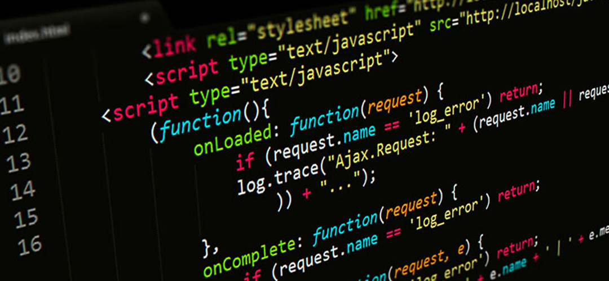
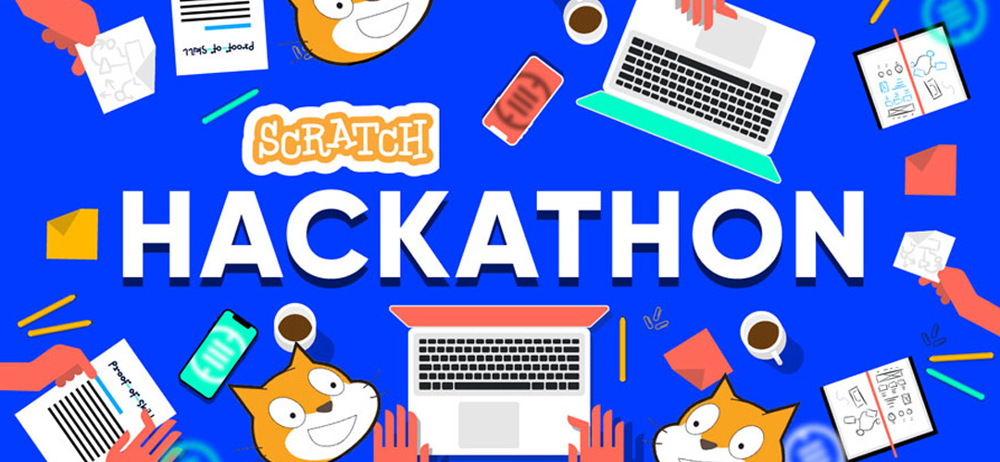
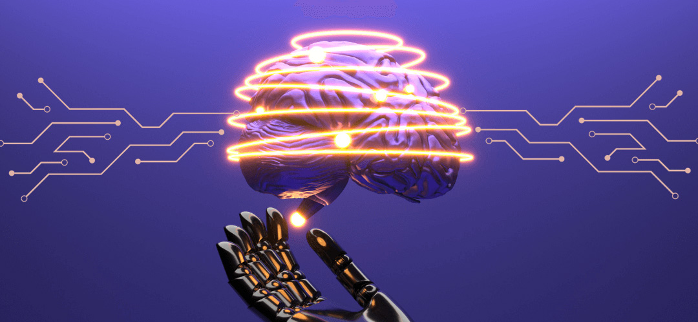
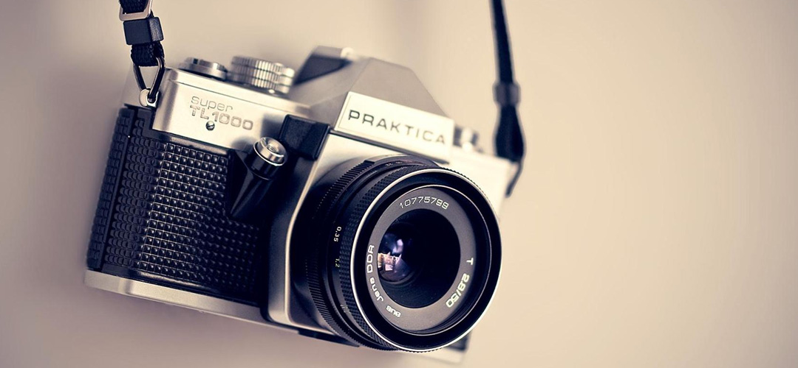
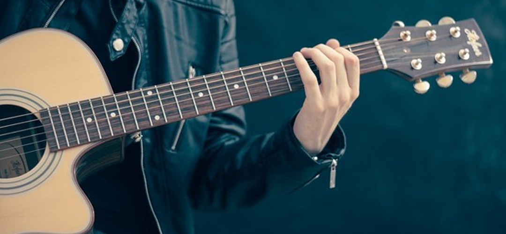

Хобби
- Программирование и разработка ПО:
Моя страсть к программированию началась еще в школе. Я обожаю решать сложные задачи и создавать полезные программы. В университете я изучаю различные языки программирования, такие как Python, Java и C++. Мне нравится создавать веб-приложения, а также решать задачи на алгоритмах и структурах данных. Когда я пишу код, я чувствую себя, как художник, создающий произведение искусства.

- Участие в хакатонах и соревнованиях:
В свободное время я часто участвую в хакатонах и программистских соревнованиях. Это отличный способ проверить свои навыки и научиться новым вещам. Я люблю работать в команде, решая сложные задачи за ограниченное время. Недавно мы с командой заняли первое место на местном хакатоне, создав приложение для управления задачами.

- Исследование искусственного интеллекта:
Искусственный интеллект всегда меня увлекал. Я изучаю машинное обучение, нейронные сети и глубокое обучение. Мне интересно, как компьютеры могут обучаться и принимать решения, подражая человеческому мозгу. Я надеюсь, что в будущем смогу внести свой вклад в развитие этой области.

- Фотография и путешествия:
Я люблю фотографировать. Когда я путешествую, я всегда беру с собой фотокамеру. Мне нравится запечатлеть красоту природы, архитектуру и моменты жизни. Я также учусь редактировать фотографии, чтобы они выглядели еще лучше.

- Игра на гитаре:
Музыка всегда была частью моей жизни. Я играю на гитаре с детства. Это мое увлечение, которое помогает мне расслабиться и выразить свои эмоции. Я люблю играть разные мелодии, от классической музыки до рок-н-ролла. Мои друзья часто приглашают меня на вечеринки, чтобы я сыграл что-то на гитаре.
